|
|
|
All of the text in your write-up should be in your own words. If you need to add additional HTML features to this document, you can search the http://www.w3schools.com/ website for instructions. To edit the HTML, you can just copy and paste existing chunks and fill in the text and image file names appropriately.
If you are well-versed in web development, feel free to ditch this template and make a better looking page.
Here are a few problems students have encountered in the past. Test your website on the instructional machines early!
"./images/image.jpg"Do NOT use absolute paths, such as
"/Users/student/Desktop/image.jpg"
.png != .jpeg != .jpg != .JPG
Here is an example of how to include a simple formula:
a^2 + b^2 = c^2
or, alternatively, you can include an SVG image of a LaTex formula.
In this project, we first implemented ray generation and scene interaction methods, which allow us to render basic simple
scenes. Then, we implemented BVH (Bounding Volume Hierarchy), which significantly reduces the time it takes to render
complex scenes. After that, we implemented direct illumination based on two sampling strateges (uniform hemisphere sampling
and importance sampling), adding basic lighting condition to scenes. Moreover, we added global illumination,
making the scene more and more realistic. In the end, we implemented adaptive sampling, which allows pixels with
less detail to converge faster. One problem we encountered when implementing BVH is the memory allocation problem.
We created two variables left and right to store primitives after splitting and passed those
variables to recursive calls. However, we could not refer to those variables later as those temporary variables are stored on the stack.
Our solution is to reorder the primitives pointers in place based on left and right, so we don't have to
create additional memory on the heap.
For the ray generation algorithm, I first calculated x, y positions of the bottom left corner and the top right corner
of the sensor in the camera space. With the x, y information, I calculated the width and the height of the sensor. Then,
since the point in the image space is normalized, I transformed the x, y position of the point from the image space to
the camera space. With the z axis being -1, I constructed a vector of the point using x, y, and z. After that, I
transformed the point in the camera space to the world space using c2w and then normalized the vector to
obtain the direction. Finally, I constructed the ray that with the origin (pos) and the direction.
In addition, I also set up a few attributes of the ray, including min_t and max_t.
For the triangle intersection algorithm, I used Moller Trumbore Algorithm, which is shown in the slide 23
of lec 9 intro to ray tracing and acceleration. Based on the algorithm, with points p1, p2, and
p3 within the triangle, I calculated e1 using p1 & p2 and e2 using p1 & p3. Then, I calculated s using the origin of the ray and p1.
I also calculated s1 with the direction of the ray & e2 and s2 with s & e1. Given all the above information (e1, e2, s, s1, s2),
I followed the algorithm and got t, b1, and b2. Since b0, b1, and b2 represent barycentric coordinates, I obtained b0 by subtracting
b1 and b2 from 1. Then, with t, b0, b1, and b2, I could check if there's a valid intersection with the triangle if b0, b1, and b2 fall
in the range between 0 and 1 and also if t falls in the range between min_t and max_t. If both conditions
above satisfy, then there's a triangle intersection, and I populated the relevant fields in the input isect.

|
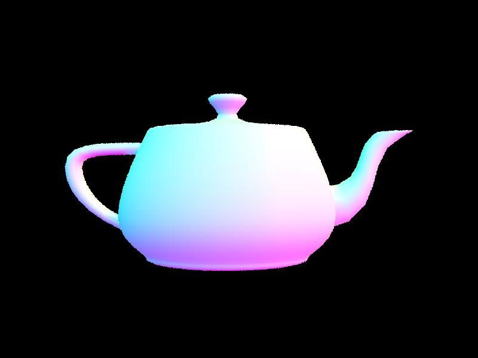
|

|
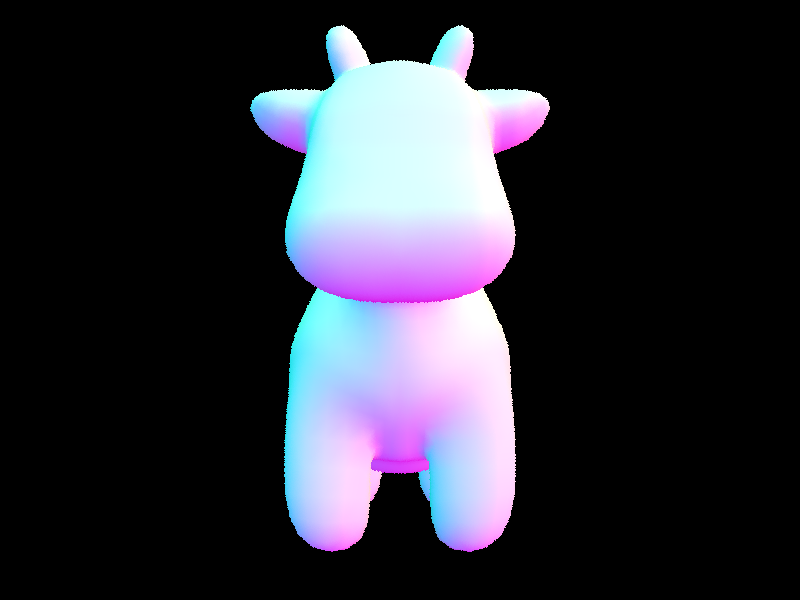
|
For the BVH construction algorithm, I first created two variables bbox and centroid_box.
bbox is used for storing the bounding box of each primitive, and centroid_box is used for
storing the centroid of each bounding box of each primitive. Then, I traversed through all the primitives between
start and end. For each primitive, I added its bounding box to bbox and the
centroid of the bounding box to centroid_box. Then, I constructed the BVH node with bbox.
After that, if the number of primitives between start and end is less than or equal to
the maximum leaf size, I set up the start and end attribute of the BVH node and directly
return the node. Otherwise, I had to split the primitives. Using centroid_box, I first found out the axis
with the most extent, and that would be the axis that I would split on. To get the split value, I just took the average
between the minimum value and the maximum value of the bounding box (centroid_box) on the axis to split on.
With the split axis and the split value, I splitted the primitives into two groups, which are stored in left
and right. Then, to avoid memory allocation, I reordered the primitives in place based on left and
right. Finally, I recursively call the construct_bvh function twice, one function that recurses
into the left child of the BVH node and one function that recurses into the right child of the BVH node.
Like I mentioned above, after I decided the split axis, I took the average between the minimum value and the maximum value of the bounding box on this axis. This average serves as the splitting point. This splitting point is easy to calculate, and it also guarantees that primitives won't lie on one side of the splitting point.
|
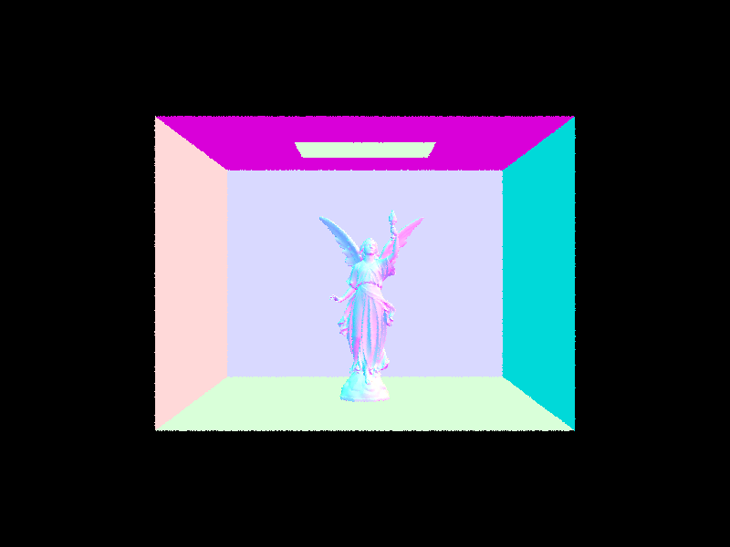
|

|

|
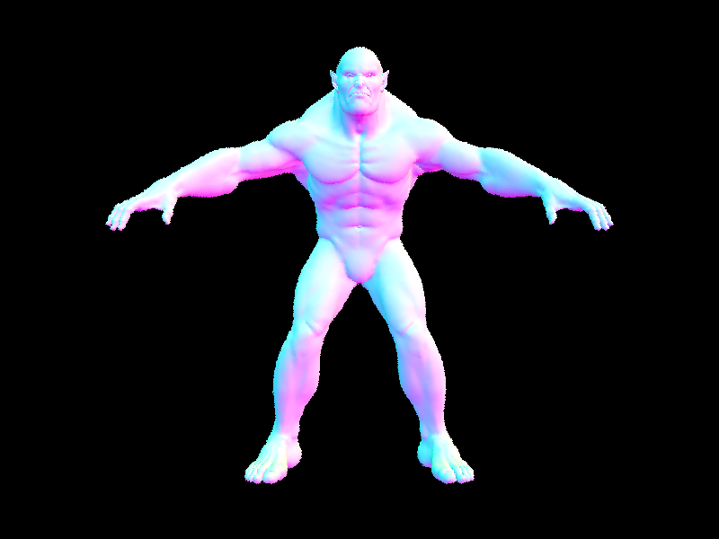
|
| Scene | Render Time without BVH | Render Time with BVH |
| CBbunny.dae | 107.2377s | 0.0520s |
| cow.dae | 20.6669s | 0.1396s |
| maxplanck.dae | 186.6132s | 0.1430s |
| CBlucy.dae | 545.6183s | 0.1043s |
The table above shows the rendering time with and without BVH for a few scenes. From the table, we can see that BVH can significantly reduce the time to render the scene when the scene gets complicated. For instance, it takes 545.6183s to render the scene of CBlucy.dae without BVH while it only takes 0.1043s with BVH.
I first looped over num_samples incoming directions w_in using a hemisphere sampler. It then checked whether the outgoing direction w_out pointed away from the surface by examining its z-component. If w_out had a negative z-component, I negated w_in.
Then, I created a new ray ray_in from the hit point hit_p and the transformed incoming direction o2w * w_in and set the min_t parameter of the ray to a small constant EPS_F.
I then intersected the ray ray_in with the scene using a bounding volume hierarchy (BVH), and if an intersection occurred, I computed the emission from the intersected surface emission using the surface's bsdf->get_emission() function. I then estimated the radiance due to indirect lighting by computing the product of the reflectance of the surface isect.bsdf->f(w_out, w_in), the emission, the cosine of the angle between the surface normal and the incoming direction cos_theta(w_in), and a constant factor 2 * PI. The radiance estimate was added to the total radiance L_out.
After all the samples were processed, I computed the average radiance by dividing L_out by num_samples and returned the result.
During the execution of the attached code, I iterated through each light in the given scene. For each light, I initialized a variable called "current_num_samples" to 1, unless the light was not a delta light, in which case I set it to the integer value of ns_area_light. I then added the value of current_num_samples to a variable called "num_samples".
Next, for each light, I iterated through current_num_samples times. Within this loop, I initialized several variables, including "w_in_world", "w_in", "distToLight", and "pdf". I also called the "sample_L" function of the light object with hit_p, &w_in_world, &distToLight, and &pdf as arguments, and stored the resulting Vector3D in a variable called "L_in".
After this, I created a new "Ray" object called "ray_in" with hit_p and w_in_world as arguments. I then set the "min_t" member of this object to EPS_F and the "max_t" member to distToLight divided by the norm of the object's "d" member minus EPS_F.
Finally, if the "has_intersection" function of the BVH object with ray_in as an argument returned false, I set the "w_in" member variable to w2o times w_in_world, and then added the value of isect.bsdf->f(w_out, w_in) times L_in times the absolute value of w_in's "z" member divided by pdf and current_num_samples to the "L_out" variable.
At the end of the function, I returned the value of L_out.
| Uniform Hemisphere Sampling | Light Sampling |
|---|---|
|
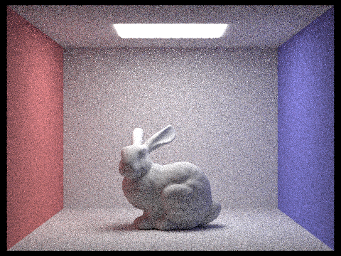
|
|
|
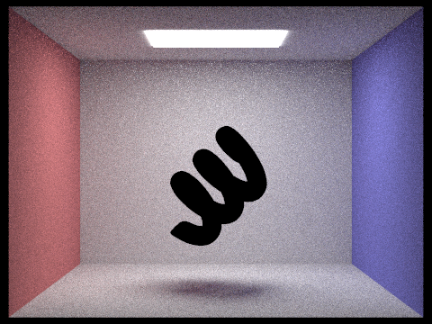
|
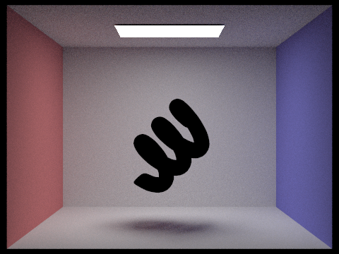
|
|
|
|
|
|
|
We can see that as the number of light rays increases, the
It can be observed that lighting sampling produces less noise compared to uniform hemisphere sampling. The primary distinction lies in their method of ray casting. Uniform hemisphere sampling uniformly casts rays in all directions from a surface point, while lighting sampling selects a random point on the light source and casts a ray towards it. Uniform hemisphere sampling can lead to noisy results in areas with high contrast or complex lighting conditions due to uniformly casting rays in all directions. Conversely, lighting sampling offers more precise and realistic outcomes by directly sampling the contribution of each light source in the scene, as all rays originate from the light source.
I calculated the one-bounce radiance and stored the result in a variable called L_out. I set the value of cpdf to 0.75. If the ray depth is equal to 1 or if a random coin flip using the cpdf value is false and the ray depth is not equal to the maximum ray depth, I returned the value of L_out.
Otherwise, I declared several variables: w_in_world, w_in, distToLight, pdf, and f, and calculated the BSDF's sampled value with respect to the output direction and stored it in the variable f. I then transformed the sampled input direction from object space to world space and stored the result in the variable w_in. Using the input direction, I created a new ray called next_ray, and set the minimum t value of the ray to EPS_F and its depth to r.depth - 1.
I then declared the variable next_hit, which would store the intersection information between the new ray and the scene. If an intersection was found, I calculated the at least one-bounce radiance for the next ray and the next hit, and added it to the value of L_out. I multiplied this result by the absolute value of the z component of the input direction in world space, and divided by the value of pdf and cpdf. Finally, I returned the value of L_out.
|
|
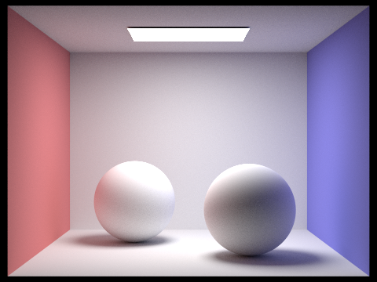
|
|
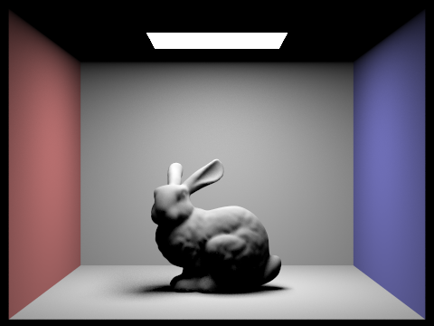
|
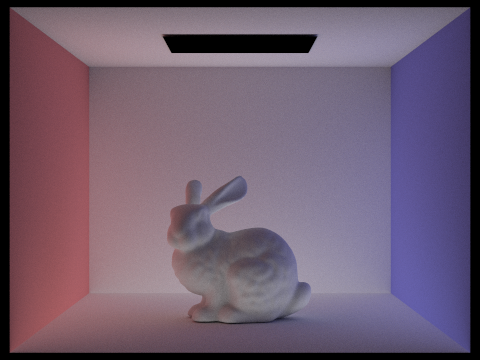
|
If we only display direct illumination, we will only see the zero-bounce and one-bounce lighting effects. This means that we will only see light coming directly from the light source and illuminating unobstructed regions. The rest of the scene, such as the area beneath the bunny and the ceiling, will be completely dark. On the other hand, if we only display indirect illumination, we will only see the lighting effects after one bounce. This means that the entire scene will be visible, but at a lower brightness level. This is because every region will have some rays bouncing off it and reaching the light source at different points. The bunny will not appear brighter as the direct light hitting it will not be displayed.
|
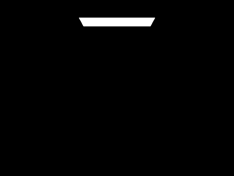
|
|
|
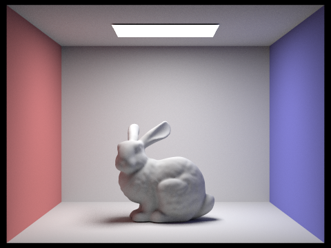
|
|
|
|
If the value of max_ray_depth is set to 0, the scene will only have zero bounces and the only illuminated part will be the light source. However, if the value is set to 1, both zero and one bounces will be present, resulting in direct lighting conditions. Increasing the value of max_ray_depth leads to more rays bouncing between objects and walls, resulting in a brighter and more realistic image. However, we noticed that when the value of max_ray_depth was set to 100, there were few observable changes, possibly due to the implementation of Russian roulette causing most of the rays to be unobservable or stopped.
|
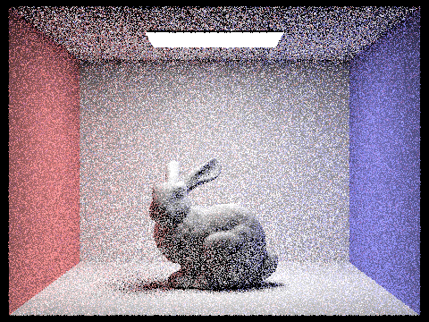
|
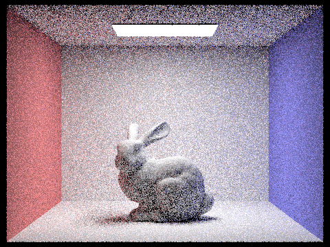
|
|
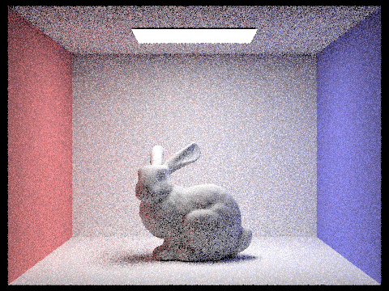
|
|
|
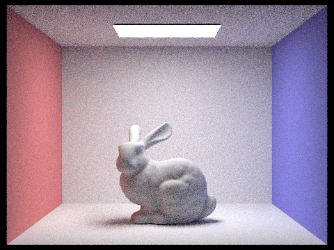
|
|
|
|
Increasing the number of samples per pixel results in a less noisy final image, as it allows for a larger number of light rays to be sampled in the scene. With more samples, subtle variations in color and lighting can be better captured and averaged out, resulting in a smoother image. This is particularly helpful in scenes with high contrast or complex lighting conditions, where low sample counts can result in inaccuracies and artifacts. Ultimately, increasing the number of samples per pixel improves the quality of the rendered scene, resulting in a more realistic and immersive experience.
When rendering scenes, some pixels converge faster with low sampling rates while other pixels require large number of samples to get rid of noise. Adaptive sampling is the strategy to avoid the problem of using a fixed (high) number of samples per pixel, by concentrating the samples in the most difficult parts of the image. With adaptive sampling, pixels with less detail can converge faster with fewer samples while pixels with a lot of details converge with high number of samples.
The algorithm starts by initializing several variables, including the number of samples to evaluate num_samples,
the bottom left of the pixel origin, and a running total of the estimated color total.
It also initializes two variables (s1 and s2) that will be used to compute the sample mean and variance
according to the instruction of the task, and a variable curr_samples that keeps track of the
number of samples evaluated so far.
At regular intervals (specified by the samplesPerBatch variable), the algorithm computed the sample mean
and variance up to the current index. Using the variance and curr_samples, I calculated I based on the instruction and
checked whether the variable is below a certain tolerance (maxTolerance * mean). If the condition is true, the loop is
terminated early since it means that the pixel has converged. Otherwise, I sampled a point using the grid sampler, normalized
the point, generated a ray with the point, estimated the scene radiance of the ray (stored in the variable color), and got the illuminance using the
illum function, which is stored in the variable x_k. Then, x_k is used to update
s1 and s2, and color is added to the variable total.
After all samples have been evaluated, the algorithm computed the average color by dividing the sum of all estimated
colors total by the number of samples evaluated curr_samples. sampleBuffer is updated
with the average color at the corresponding position, and sampleCountBuffer gets updated with the number of
samples evaluated at the corresponding position.
|
|
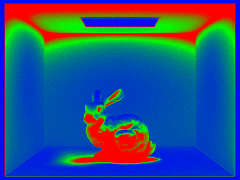
|
|
|
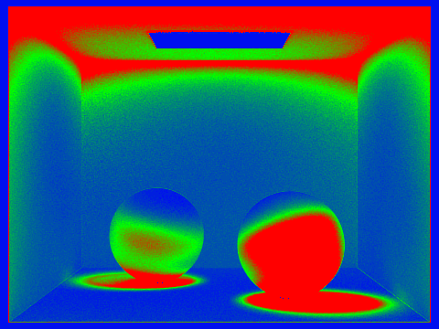
|